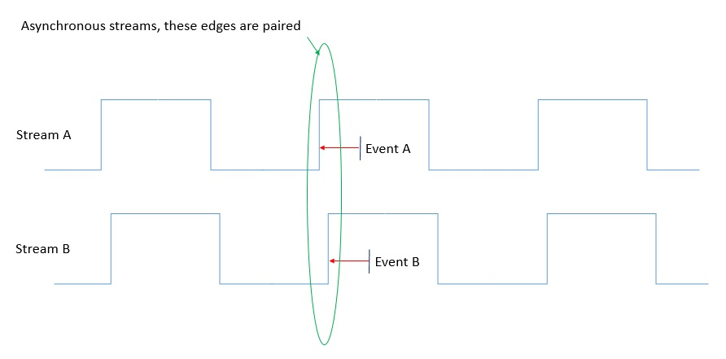

Sync: Aligning with Edges
Document organization:
- General principles
- Needed components and their use
- Worked example showing command line parameters
- Plug for scripted pipeline
Overview
Definition: SpikeGLX Data Stream = Set of channels sampled according to a given sample clock.
Examples of streams:
-
Neuropixels probe. The sample clock lives in the headstage. The AP-band data are acquired at nominally 30kHz but actual rates may differ by as much as one Hz. If that probe acquires a separate LF-band, the same clock is used and the LF-band sample rate is exactly 1/12 that of the AP-band. In short each probe, really each headstage, is a separate stream.
-
NI device: Generally you will record all of your non-neural analog and digital (TTL) channels with a single multifunction/multichannel device running at a sample rate that you select. This is one stream.
Actually SpikeGLX lets you run two NI devices of the same model together, one master and one slave, so that they share a common clock, and are thus recorded and treated as a single stream with double the channel capacity.
Problem: Generally, data streams each have their own clock, hence, their own nominal sample rate, and run asynchronously. Moreover, sample clock rates will vary with temperature. This makes it necessary and challenging to synchronize (align) events acquired in different streams.
Solution: SpikeGLX (plus companion tools CatGT and TPrime) provide a reliable means of aligning data to sub-millisecond accuracy. Note that the SpikeGLX "alignment" process does not entail any resampling or editing of the raw acquired data. Rather it is a scheme for mapping post-analysis event times (seconds, not samples) from one coordinate system to another.
This mapping scheme is implemented as follows. A common 1 Hz square wave is recorded in one channel of each data stream throughout the experiment. In offline processing, the rising edges in this "sync wave" are paired across streams A & B. Any event (T) occurring in B is no more than one second away from a nearest (preceding) sync wave edge (Eb) in stream B. That edge has a simultaneously occurring matching edge (Ea) in stream A. To map T in stream B to T' in stream A, we simply calculate:
T' = T - Eb + Ea.

Assuming we can correctly pair sync wave edges, the error on any mapped time is bounded by [1s * rate_error/rate]. For example, if the nominal probe sample rate is 30kHz and the error in that value is 3Hz, then the error in the mapped time would be 0.1ms.
Rate error arises when we do not know the actual clock rate. The two largest sources of error are (1) bad/unknown calibration (the largest difference from 30kHz we've seen post calibration is 1Hz), and (2) temperature variation, which we measure to be very small near room temperature: < 0.01Hz/5C. So mapping errors after application of TPrime are typically smaller than 0.1ms.
Briefly, the sync-related roles of various components are the following, listed in the order you would organize your workflow:
-
SpikeGLX:
- Calibrate sample rates
- Recalibrate rates from run
- Generate and record runtime sync wave
-
CatGT:
- Extract tables of sync wave edges
- Extract tables of non-neural event times
-
your_favorite_spike_sorter:
- Extract tables of spike times
-
TPrime:
- Remap all tables of times to reference stream coordinates
The remaining sections cover some how-to tips.
SpikeGLX: Clock calibration
Do I need it?
Calibrating your clocks is useful for these reasons:
-
It's a test of headstage health. The measured rate shouldn't be more than 1Hz different than 30kHz, and if you repeat the measurement, it should remain stable to < 0.1Hz.
-
TPrime should also be used if you plan to publish claims about timing. But if you are just browsing in the FileViewer or eyeballing PSTH plots to roughly see how things line up without the bother of running TPrime, that will work better if all clocks are at least calibrated.
-
TPrime needs to be able to identify pairs of matching edges. If the recorded times of edges in the sync wave are a second or more off, the adjustment may suffer phase error. This could be a problem in a long run where error is cumulative. To estimate the duration, consider that an uncalibrated clock could run as much as 1Hz differently than 30kHz. Then a problem will occur at time T, where
1Hz * T = 30000or T = 8.3 hours.
How to
Using the Sync tab in the Configuration dialog, you:
- select a sync wave source
- specify for each stream which channels are getting sync wave input
- check
Use next run for calibration(and select a run-length)
This configures a special purpose run and does a post-run analysis to count how many samples are actually occurring between edges of the sync wave, and thereby deduces the true sample rate. It reports its results in a dialog for you to accept or reject. If accepted these become saved in a database and are used for subsequent runs of those hardware devices until you decide to do another calibration.
Tips
You probably don't need to calibrate a given device more than once, but
you might as well get a good measurement for that one time. We recommend
setting the calibration data collection time to 40 min.
SpikeGLX: Recalibration
Conditions
Even if you never calibrated your sample clocks before, you can still calibrate them after the fact from existing run data if:
-
You were recording the sync wave in each stream you want to calibrate.
-
The run is long enough to get a reasonable estimate, at least 20 min.
How to
To do this, choose item Sample Rates From Run from the Tools menu and
follow the instructions in the dialog. As with a first-time calibration
it will show you results that you can accept or not. If you accept you can
further choose whether to edit this run's metadata, and whether to update
the database and use the new rates going forward.
The dialog won't let you select imec LF-band files because their time resolution is too low. Rather, select the partner AP-band file. Both AP and LF metadata will be updated together. Note that the LF rate is exactly 1/12 the AP rate.
SpikeGLX: Run with sync
How to
It's easy to do a run that records the sync waveform.
-
Specify a source/generator of the common sync waveform. You have several options:
-
Select any one of the imec slots.
-
Select your NI multifunction I/O device (SpikeGLX programs its output).
-
Use your own signal generator. Set it for 1 Hz and 50% duty cycle.
-
-
Feed wires from the source to one channel in each stream.
-
For the PXI based versions, all of the imec modules share the sync signal using the chassis backplane, so only one slot (module) needs a wire connected to its SMA connector, whether it is specified as input or output (source). So you connect a wire to just one (active) module, and all imec probes will automatically record the sync wave.
-
If NI is the source, the
Notesfield indicates which output terminal to connect.
-
-
Tell the Sync tab which channels you wired so SpikeGLX can locate the waveform in each stream.
- For NP 1.0 and later, this signal is hard wired to appear on bit #6 of the last 16-bit word in the stream, the SY channel.
File T-zero and length
When you are running with sync enabled on the Sync tab, whenever a
file-writing trigger event occurs and a new set of files is started,
SpikeGLX internally uses the edges to make sure that the files all
start at a common wall time. Each file's metadata records the sample
index number of the first sample in that file: firstSample. These
samples are aligned to each other. Said another way, the files share
a common T0.
While long files are being written, their alignment may slowly degrade because they are running and recording according to their own clock rates. If the clocks have been calibrated this drift will be a bit smaller, but nothing happens during writing to "reset" the alignment. Doing that would entail interpolating or resampling of data, which we do not do. (Note that TPrime corrects times by referencing times to sync edges no matter how long the file is. It's effectively like getting periodic resets throughout the run.)
The writing phase for a given set of files (given g, t index) ends when a
stop event occurs. Perhaps a writing timer elapses, or a TTL trigger gets
a stop signal, or you click the Disable or Stop button. Any such event
stops all the streams and closes the files, but the "right-hand-side" or
"trailing edges" of the files are not guaranteed to be perfectly aligned.
The files are often quite close to being the same length (metadata item
fileTimeSecs), but this is not controlled.
CatGT: Event extraction
CatGT can perform several post-processing jobs, singly or in combination:
- Concatenate a t-series of separate trial files (whence the name).
- Apply band-pass and CAR filters to neural channels.
- Edit out saturation artifacts.
- Extract tables of sync waveform edge times to drive TPrime.
- Extract tables of any other TTL event times to be aligned with spikes.
The extraction features are discussed here.
General
The extraction functions scan non-neural auxiliary channels and report positive going pulse 'events' that meet simple identifying criteria. For each qualifying event, it is the rising threshold crossing (rising edge) that is reported. The reports (in seconds) are in a text file named for the extractor. These event files can be used as input to TPrime.
There are three extractor types (shown with their parameters):
- -SY=probe,word,bit,millisec
- -XD=word,bit,millisec
- -XA=word,thresh(v),min(V),millisec
There is a lot of overlap in how they work. For any of them you need to specify:
- Which binary stream disk file to scan.
- The zero-based word (and bit) to scan in the file timepoints.
- The duration of the pulse (how long it remains high).
Which stream
-
-SY exclusively searches the digital SY word of imec streams. The first parameter is the zero-based
probeindex. -
The -XD and -XA options scan only NI streams. There is only one NI stream in any run.
Which channel
We remind you of some key binary file format ideas to help you specify
the correct zero-based {word, bit} of the on-disk saved channel you
want to scan:
-
The channel data are 16-bit fields (words).
-
Analog channels are 16-bit signed integers.
-
Digital data (1=high, 0=low) only need 1 bit per signal line, so we group digital signals (up to 16 at a time) into 16-bit unsigned integer words.
-
Starting with imec phase 3B2 (PXI) the 16 external TTL inputs available in the SY word were removed. Instead, the SY word only records a single TTL input: the sync waveform; it's on bit #6. The remaining bits are system status and error flags. It is expected you will record all non-neural signals with NI or other devices and use the sync waveform to align with those data.
-
-
The ordering of channel types is covered in the SpikeGLX user manual. Basically:
-
Imec AP files: AP-band analogs, then SY digital word.
-
Imec LF files: LF-band analogs, then SY digital word.
-
NI files (standard): XA analogs, then XD digital words.
-
NI files (Whisper): MN analogs, then MA analogs.
-
-
The counts of channels of each type depends on your selective channel saving strings on the
Savetab of SpikeGLX runConfigurationdialog.
Note that it doesn't matter what the channel names/indices were when acquired. Rather, you need to give the index of the desired channel in the saved file. For example, suppose your selective saving string for an NP 1.0 probe (2) is: '23, 27, 111, 768'. Original channel (23) is file word 0. Original channel (27) is file word 1... If you want to scan bit 6 of the SY word for this probe you would write:
> CatGT ... -ap -prb=2 -SY=2,3,6,500
Pulse duration
Each extractor type has a parameter to specify the duration of the pulse event in milliseconds. Some remarks:
-
The duration value is applied with +/- 20% tolerance.
-
You can encode multiple signals on one digital line if their durations are discriminable. Your CatGT command line can include several extractors that scan the same word (and bit) but with different duration.
-
If you are pretty sure of the expected duration of your signal, say 500 ms for the high-phase of sync waveforms, then you should specify that non-zero value to guard against false positive edges. On the other hand...
-
If you don't know the duration of the pulses or it is variable, then you can set the duration to zero. CatGT will report all rising edges in that channel regardless of duration. This is more flexible but less robust.
-XA parameters
The -XA option has a few differences:
-
There's no bit index.
-
You need to specify a threshold voltage that discriminates low from high. Generally you want the threshold pretty low to capture/report when the pulse first began.
-
However, not everything you might want to record has a square shape. If you set the
minimum voltageparameter to be > threshold, then qualification requires the amplitude to cross threshold, and, exceed the specified minimum value before it again falls below threshold. If you set the minimum value <= threshold, then no minimum is applied, so it works like a simple square detector. In any case, the reported time is always the initial threshold crossing.
Output file naming
Extractors name their output files by appending parameters to the stream name. Examples:
- run_g0_tcat.imec0.ap.SY_word_bit_millisec.txt
- run_g0_tcat.nidq.XD_word_bit_millisec.txt
- run_g0_tcat.nidq.XA_word_millisec.txt
TPrime: Remapping
General
After recording, spike sorting, TTL extraction...Now you need to convert all these times from the native timelines of the data streams in which they were measured to a common reference timeline. That's the only way you can compare them! That's what TPrime does.
TPrime uses three types of files:
-
tostream: The reference stream we will map to. It is defined by a file of sync wave edges as extracted by CatGT. There is only one of these. -
fromstream: A native stream we will map from. There can be several of these. A fromstream is identified by a file of sync wave edges extracted by CatGT, and, an arbitrary positive integer that is a shorthand for that stream, just so you don't have to type the edge-file-path over and over. -
events file: These are times you want to convert. Typically you will have a different file for every event class, such as all the spikes from probe zero, or all the nose_poke times from the NI stream. On the command line for each such file you will specify the stream index for the matching fromstream, an input file of native times, a new file path for the output times.
Events files
Key specs for events files:
- Input and output file type can be .txt or .npy (Kilosort).
- You can mix types: txt in, npy out, etc.
- Times are seconds, they are not sample numbers.
- Times are relative to the start of the file.
- Times are in ascending order.
Worked example
Outline
Here we'll show actual command lines for CatGT and TPrime. We'll use a very simple contrived experiment for concreteness.
- Two probes {0,1}.
- Two non-neural NI signals {go_cue, nose_poke}.
SpikeGLX settings
Just settings relevant to the tool command lines...
NI Setuptab:- Primary device ::
XAbox: 0 ; go_cue as analog just to demonstrate - Primary device ::
XDbox: 2,3 ; 2=nose_poke, 3=sync - Common analog ::
AI range: -5, 5
- Primary device ::
Synctab:Square wave source:: Imec slot 3- Inputs ::
Nidq: Digital bit, 3
TriggerstabTrigger mode: Immediate start ; single file record, on button press
Savetab:- Channels to save ::
IM(probe 0): 0-49,200-249,768 ; 2 blocks of 50 channels + SY - Channels to save ::
IM(probe 1): all - Channels to save ::
NI: all - Run naming ::
Data directory:: D:/Data - Run naming ::
Run name: demo - Run naming ::
Folder per probe: checked
- Channels to save ::
SpikeGLX output
D:/data/ ; data folder
demo/ ; run folder
demo_g0_imec0/ ; probe folder
demo_g0_t0.imec0.ap.bin
demo_g0_t0.imec0.ap.meta
demo_g0_t0.imec0.lf.bin
demo_g0_t0.imec0.lf.meta
demo_g0_imec1/ ; probe folder
demo_g0_t0.imec1.ap.bin
demo_g0_t0.imec1.ap.meta
demo_g0_t0.imec1.lf.bin
demo_g0_t0.imec1.lf.meta
demo_g0_t0.nidq.bin ; ni at top of run folder
demo_g0_t0.nidq.meta
CatGT command line
I broke the line into several groups using continuation characters (^) but doing so is aesthetic only. The comments (;) must not appear in real commands.
IMPORTANT: In real command lines there should be NO extra spaces inserted into the text of options, NOR following a caret (^) character.
> CatGT ^
-dir=D:/data -run=demo -prb_fld ^ ; run naming
-g=0 -t=0,0 ^ ; g and t range
-ap -prb=0,1 -ni ^ ; which streams
-apfilter=butter,12,300,9000 ^ ; filters
-SY=0,100,6,500 -SY=1,384,6,500 ^ ; sync, note channel counts
-XA=0,1.1,0,25 ^ ; go_cue = 25 ms square pulse
-XD=1,2,0 ^ ; nose_poke duration unknown
-XD=1,3,500 ^ ; sync
-dest=D:/CGT_OUT ^ ; let's put output in new place
-out_prb_fld ; and use an output folder per probe
CatGT output
D:/CGT_OUT/ ; master output folder
catgt_demo_g0/ ; run output folder
demo_g0_imec0/ ; probe folder
demo_g0_tcat.imec0.ap.bin ; filtered data for KS2
demo_g0_tcat.imec0.ap.meta
demo_g0_tcat.imec0.ap.SY_100_6_500.txt ; sync edges
demo_g0_imec1/ ; probe folder
demo_g0_tcat.imec1.ap.bin ; filtered data for KS2
demo_g0_tcat.imec1.ap.meta
demo_g0_tcat.imec1.ap.SY_384_6_500.txt ; sync edges
demo_g0_tcat.nidq.XA_0_25.txt ; go_cue
demo_g0_tcat.nidq.XD_1_2_0.txt ; nose_poke
demo_g0_tcat.nidq.XD_1_3_500.txt ; sync edges
Kilosort 2 output
Suppose we tell KS2 to put its output into the same folders as the CatGT output. Of course we run KS2 once for each probe. The output from KS2 is then:
D:/CGT_OUT/ ; master output folder
catgt_demo_g0/ ; run output folder
demo_g0_imec0/ ; probe folder
amplitudes.npy
channel_map.npy
...
spike_times.npy ; this is in samples
...
whitening_mat_inv.npy
demo_g0_imec1/ ; probe folder
amplitudes.npy
channel_map.npy
...
spike_times.npy ; this is in samples
...
whitening_mat_inv.npy
Samples to times
Most spike sorters report spike times as sample indices so we'll need our own mini program to convert those to times in seconds. The program:
- Loads array
spike_times.npy. - Parses value
imSampRatefrom the metadata file. - Divides the rate into each array element.
- Writes the times out in same folder as
spike_seconds.npy.
Metadata parsers are available here.
IMPORTANT: npy files usually store the values as doubles which preserves full numeric precision. Whenever you are saving clock rates or event times as text, be sure to write the values to microsecond-level precision. Keep six digits in the fractional part.
TPrime command line
Let's map all times to probe-0:
> TPrime -syncperiod=1.0 ^
-tostream=D:/CGT_OUT/catgt_demo_g0/demo_g0_imec0/demo_g0_tcat.imec0.ap.SY_100_6_500.txt ^
-fromstream=1,D:/CGT_OUT/catgt_demo_g0/demo_g0_imec1/demo_g0_tcat.imec1.ap.SY_384_6_500.txt ^
-fromstream=2,D:/CGT_OUT/catgt_demo_g0/demo_g0_tcat.nidq.XD_1_3_500.txt ^
-events=1,D:/CGT_OUT/catgt_demo_g0/demo_g0_imec1/spike_seconds.npy,D:/CGT_OUT/catgt_demo_g0/demo_g0_imec1/spike_seconds_adj.npy ^
-events=2,D:/CGT_OUT/catgt_demo_g0/demo_g0_tcat.nidq.XA_0_25.txt,D:/CGT_OUT/catgt_demo_g0/go_cue.txt ^
-events=2,D:/CGT_OUT/catgt_demo_g0/demo_g0_tcat.nidq.XD_1_2_0.txt,D:/CGT_OUT/catgt_demo_g0/nose_poke.txt
Scripted pipeline
It can be daunting to get all these command lines correct. You might want to check out Jennifer Colonell's version of the Allen Institute ecephys_spike_sorting pipeline. This Python script-driven pipeline chains together: CatGT, KS2, Noise Cluster Tagging, C_Waves, QC metrics, TPrime. It's been tested a lot here at Janelia.
fin